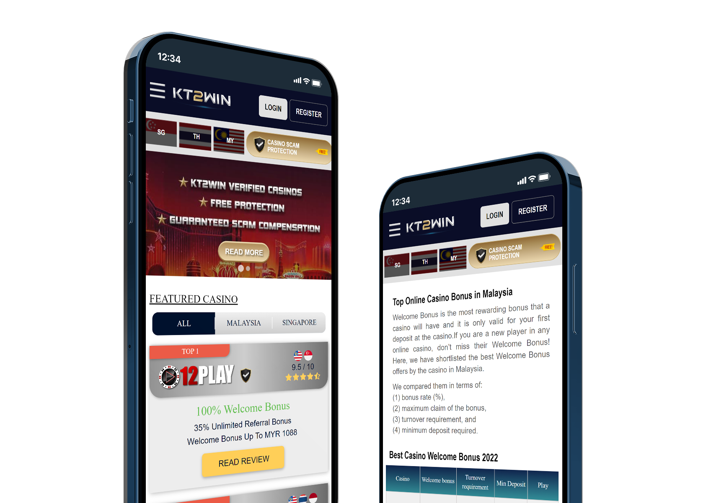
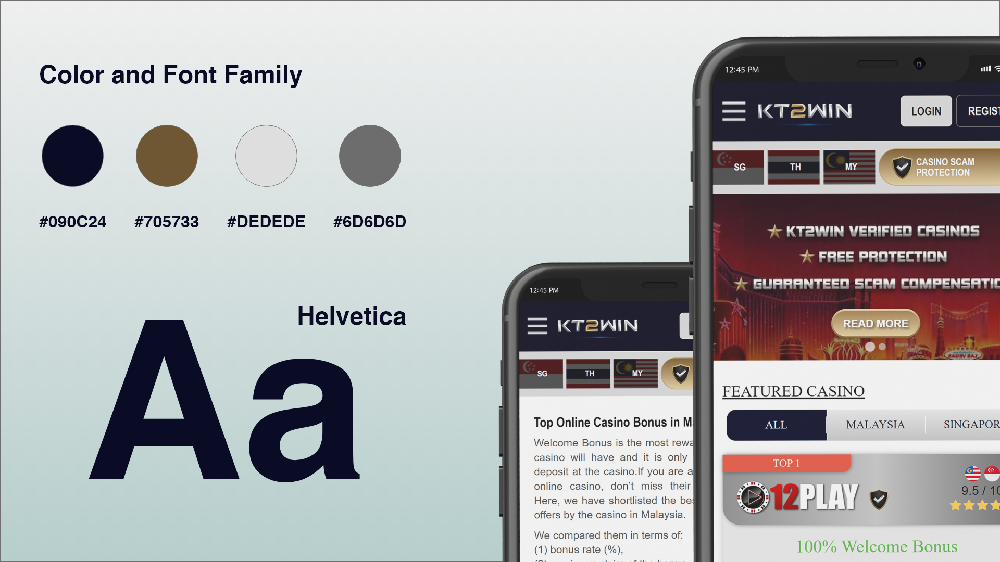
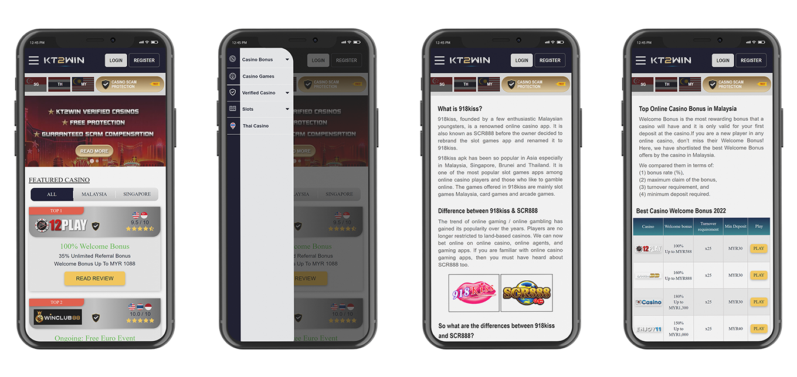
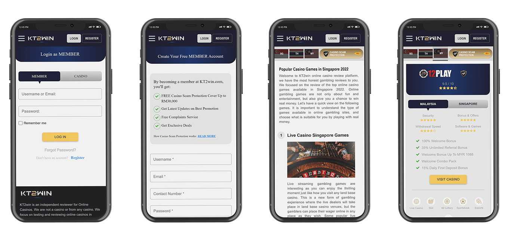
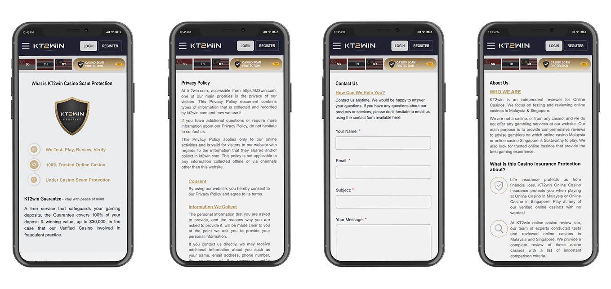

KT2Win is an independent casino review platform for Malaysia and Singapore. It helps people compare online casinos through reviews, ratings, bonuses and trust information.


KT2Win is a review website for online casinos in Malaysia and Singapore. The challenge was to make a large amount of information — reviews, ratings, bonuses and trust signals — easy to compare without making the page feel overwhelming.
I focused on making reviews easy to scan and compare. Each casino gets a clear card with the rating, bonus, licensing and fairness score up front. Trust signals come before promotions, because that is what users came to check.




next project